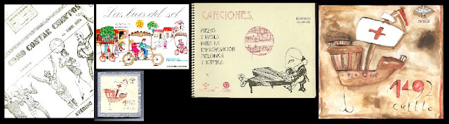
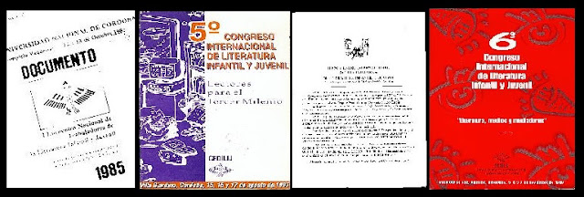
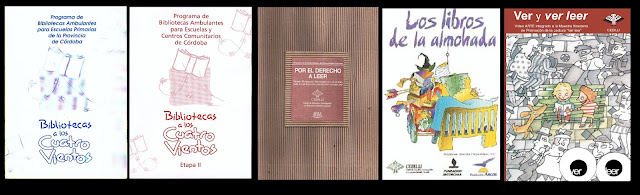
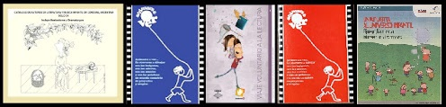
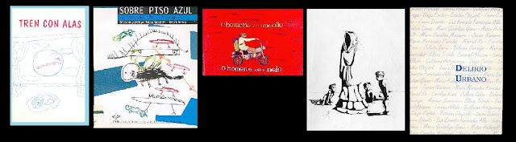
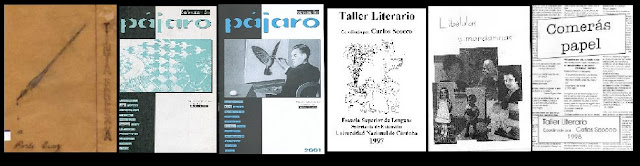

Investigación
Publicaciones CEDILIJ
Desde 1987 desarrollamos labores editoriales eventuales vinculadas a nuestras investigaciones: la revista especializada Piedra Libre (1987-1998) y otras publicaciones institucionales sobre proyectos y capacitaciones. Además, quienes integran nuestro equipo han escrito y publicado diversos ensayos y artículos académicos.
Publicaciones especiales
Ediciones especiales
Listado de publicaciones que realizamos en torno a experiencias de investigación o formación puntuales, ediciones de eventos y material pedagógico producido en torno a proyectos institucionales de promoción a la lectura y de creación literaria.

-
Cómo contar cuentos. Guía práctica — Daniel Mato, 1987 Reproducción de CEDILIJ autorizada por AVEDINO (Asociación Venezolana para la Difusión y Desarrollo de la Narración Oral), en el marco de talleres de Daniel Mato en Córdoba.
-
Las Bicis del Sol Libro de lecturas iniciales preparado por Rosa María Rey y María del Carmen Capel, específicamente para la adquisición de la lectoescritura. Incluyó una antología de cuentos y poesías realizada por Nora Gómez y Sandra Panaiotti (CEDILIJ). Ediciones Colihue, Bs. As., 1989.
-
Canciones, piezas y bases para la improvisación melódica y rítmica Música para niños de Eduardo Allende. Ilustraciones de Jorge Cuello. Coedición CEDILIJ / Collegium C.EI.M, Córdoba, 1996. Distinguida con el Fondo Estímulo a la Actividad Editorial Cordobesa.
-
1492 — Jorge Cuello Libro álbum. 1.ª edición: 1997, libro de artista de producción mixta (base impresa, coloreado y encuadernado manual). Distinguido con la Mención Alberto Burnichón al mejor libro editado en Córdoba y el Fondo Estímulo a la Actividad Editorial Cordobesa. 2.ª edición: 2002, en el catálogo de Calibroscopio Ediciones, Bs. As., con la distinción Destacado de ALIJA en categoría Rescate Editorial.
Publicaciones especiales
Documentos de eventos y congresos

-
1º Encuentro Nacional de Trabajadores de LIJ Complejo Vaquerías, octubre de 1985. Incluye palabras de Nora Gómez, Perla Suez, Clara Butnik y María Luisa Cresta de Leguizamón.
-
5º Congreso Internacional de LIJ, Lectores Para El Tercer Milenio Villa Giardino, agosto de 1997. Ponencias de Graciela Montes, Liliana Menéndez, Marina Colasanti, María Luisa Cresta de Leguizamón, Gustavo Bombín, Susana Itzcovich, Christian Ferrer, María Cecilia Silva Díaz, Carlos Silveyra, Canela (Gigliola Zecchin de Duhalde), Silvia Castrillón, Laura Devetach y Ana María Machado. Incluye síntesis de talleres y 41 comunicaciones.
-
II Encuentro Internacional de Trabajadores de LIJ Villa Giardino, 1997.
-
6º Congreso Internacional de LIJ, Literatura Medio y Mediadores Carlos Paz, noviembre de 1999. Ponencias de Graciela Cabal, Susana Allori, Cecilia Bettolli, Serena Jara Melagrani, Mariano Medina, Teresa Sassarolli, Verónica Uribe, Antonio Santa Ana, María Jesús Gil Iglesias, María Adelia Díaz Rönner, Graciela Perriconi, Julio Neveleff, Pablo De Santis, Ana Ammann y Silvina Reinaudi. Incluye síntesis de talleres y 64 comunicaciones.
Publicaciones especiales
Publicaciones de proyectos

-
Biblioteca A los Cuatro Vientos (Etapa I y II) Etapa I: destinada a escuelas primarias de la provincia de Córdoba, financiada por las Fundaciones Arcor y Juan Minetti, edición 1997. Redacción y coordinación general: Cecilia Bettolli. Artículos de Kurusa (Venezuela), Daniel Goldin (México), Graciela Montes (Argentina) y Sergio Andricaín (Colombia). Etapa II: destinada a escuelas y centros comunitarios de Córdoba, financiada por las Fundaciones IAF (Inter American Foundation) y Juan Minetti, edición 2002. Redacción y coordinación general: Susana Allori y Cecilia Bettolli. Artículos de Carolina Rossi, Susana Gómez (Suny) y Mariano Medina. Texto de María Teresa Andruetto.
-
Por el Derecho a Leer Carpeta con 5 cartillas de apoyo a la formación de mediadores del programa homónimo, sobre Lectura, Literatura, Biblioteca, Animación a la lectura y Criterios de Selección. Elaboración: Susana Allori y Cecilia Bettolli. Selecciones bibliográficas: Carolina Rotondó. Editadas en el marco del Programa Por el Derecho a Leer, Córdoba, 2001. Fueron insumo para el libro Viaje Voluntario a la Lectura (2008).
-
Ver y Ver Leer Video de animación a la lectura de imágenes, material pedagógico-recreativo del Proyecto Ver Leer. Realización: Leandro Massino y CEDILIJ, Córdoba, 2003.
-
El Manual de los Libros de la Almohada Material informativo y pedagógico para el Programa de Bibliotecas Ambulantes para Hospitales de Niños de la ciudad de Córdoba. Autoras: Susana Allori y Marcela Buteler, año 2000. De circulación parcial, permanece inédito.

-
CALYMI: Catálogo de Literatura y Música Infantil de Córdoba Obras y autores del siglo XX. Proyecto coordinado por Claudia Santanera y Mariano Medina. Muy consultado por docentes y estudiantes terciarios y universitarios; estuvo on line entre 2003 y 2011.
-
Animarse a Ver Cuadernillo de apoyo a la capacitación del Proyecto Animarse a Ver. Aborda el lenguaje cinematográfico apreciando su construcción narrativa y el camino que va de las películas a los libros que les dieron vida. Susana Allori, Abril López, Carolina Rossi y Alejandro Cozza. Dos ediciones, 2008 y 2009. Edición Azul: incluye el artículo "Charlie y la fábrica de chocolate: De Roald Dahl a Tim Burton", de Carolina A. Rossi. Edición Roja: incluye el artículo "Entre cine y literatura: comparación entre el esquema narrativo de un libro álbum y su versión cinematográfica", también de Carolina A. Rossi.
-
Viaje Voluntario a la Lectura Material de apoyo a la capacitación de voluntarios y mediadores del Programa Placer de Leer de la Fundación C&A Argentina, que tuvo el asesoramiento de CEDILIJ en el período 2008/2009. Autores: Susana Allori, Cecilia Bettolli, Laura Escudero Tobler, Serena Jara, Mariano Medina y Carolina Rossi. Coordinador de edición: Mariano Medina. Ilustraciones de Pablo Bernasconi.
-
Una puerta al universo infantil Suplemento especial con los diarios La Voz del Interior (Córdoba), Los Andes (Mendoza) y Uno (Entre Ríos). Ed. Fundación Arcor, 2011. Desarrollo del área Literatura: Susana Allori y Carolina Rossi (CEDILIJ).
Publicaciones especiales
Ediciones de proyectos de taller de escritura creativa

De talleres y concursos para niños y adolescentes
-
El Tren con alas Plaqueta del taller homónimo, 1992. Coordinación: Teresa Sassaroli y Sandra Panaiotti en su primera etapa, luego Teresa Sassaroli y Mariano Medina.
-
Lagartijas sobre piso azul Antología de escritura de niños. Selección y prólogos: Teresa Sassaroli y Mariano Medina, Córdoba, 1994. Distinguido con el Fondo Estímulo a la Actividad Editorial Cordobesa.
-
El hombre y su medio / O homem seu medio Publicación bilingüe del 1º Concurso de literatura de niños de Mercociudades. Auspiciado por CEDILIJ. Edición español-portugués. Ed. Municipalidad de Córdoba, 1998.
-
Delirio Urbano I y II Taller de escritura para adolescentes coordinado por María Teresa Andruetto. Delirio Urbano I (con prólogo de Mariano Medina), 1992; Delirio Urbano II, 1993.

De talleres para adultos
-
Taller Tinta Fresca Taller de escritura coordinado por Perla Suez. Realizó una edición artesanal, 1994.
-
Cabeza de Pájaro I y II Talleres de escritura co-organizados con la UEPC (Unión de Educadores de la Provincia de Córdoba). Coordinación: Carlos Scocco (CEDILIJ). Dos publicaciones: 2000 y 2001.
-
Taller de Escritura Coorganizado con la Secretaría de Extensión de la Escuela Superior de Lenguas de la Universidad Nacional de Córdoba. Coordinación: Carlos Scocco (CEDILIJ). Tres publicaciones: Taller Literario (1997), Comerás papel (1998) y Libélulas y Mandarinas (1999).